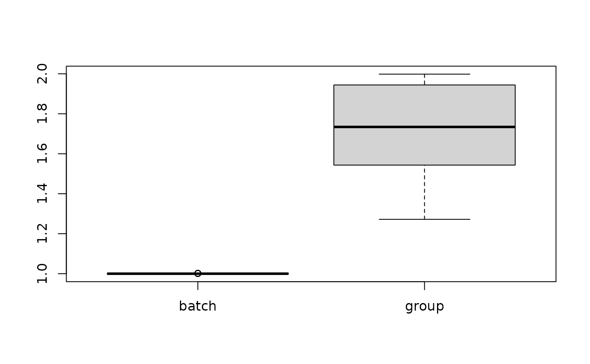

Compute per-cell Local Inverse Simpson's Index (LISI) scores for one or more categorical variables.
This is a clean-room reimplementation of the immunogenomics/LISI.
Usage
compute_lisi(
X,
meta_data,
label_colnames,
perplexity = 30,
nn_method = c("auto", "exact"),
tol = 1e-05,
max_iter = 50
)Arguments
- X
A matrix-like object with cells in rows and embedding/features in columns.
- meta_data
A data frame with one row per cell.
- label_colnames
Character vector of column names in
meta_datato evaluate.- perplexity
Effective neighborhood size. Defaults to
30.- nn_method
Nearest-neighbor backend. Defaults to
"auto", which uses the package's exact C++ search.- tol
Tolerance used in the binary search for the target perplexity. Defaults to
1e-5.- max_iter
Maximum number of binary-search iterations. Defaults to
50.
References
Korsunsky I, Millard N, Fan J, et al. Fast, sensitive and accurate integration of single-cell data with Harmony. Nature Methods (2019). https://www.nature.com/articles/s41592-019-0619-0
LISI reference implementation: https://github.com/immunogenomics/LISI
Examples
set.seed(1)
X <- rbind(
matrix(stats::rnorm(100, mean = -2), ncol = 5),
matrix(stats::rnorm(100, mean = 2), ncol = 5)
)
meta_data <- data.frame(
batch = rep(c("A", "B"), each = 20),
group = sample(c("g1", "g2"), 40, replace = TRUE)
)
res <- compute_lisi(
X, meta_data,
c("batch", "group"),
perplexity = 10
)
head(res)
#> batch group
#> 1 1.001837 1.490901
#> 2 1.000010 1.439122
#> 3 1.001436 1.915155
#> 4 1.000065 1.644454
#> 5 1.000029 1.501060
#> 6 1.000000 1.560663
boxplot(res)
